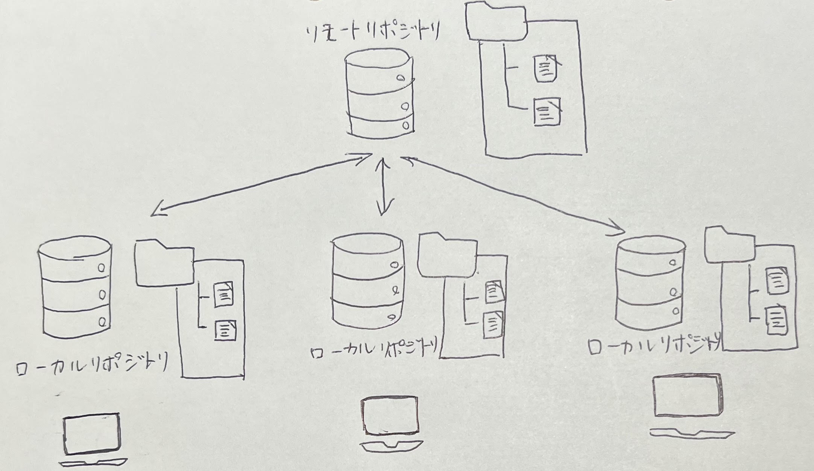

Gitの仕様は、キーボード入力のコマンドによって操作するCUIである。 git管理は基本的に以下の構造となっている。  ファイルやディレクトリが保存されるリポジトリは、リモートリポジトリとローカルリポジトリに分かれる。 リモートリポジトリとは、特定のサーバー上に設置して複数人で共有するためのリポジトリである。 ローカルリポジトリとは、ユーザーごとに配置される手元のマシンで編集できるリポジトリである。 【初心者向け】Gitとは何なのか。基本用語やその仕組みをまとめています。